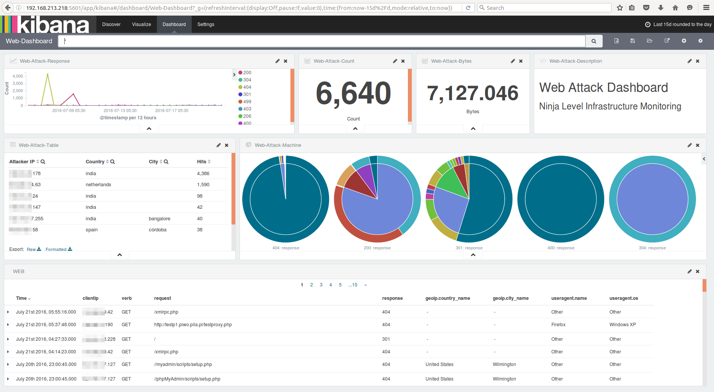
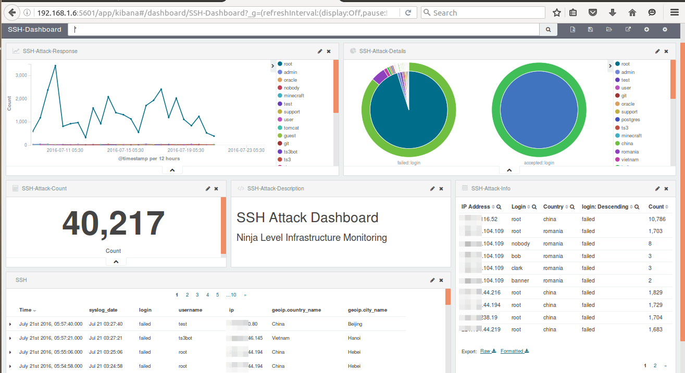
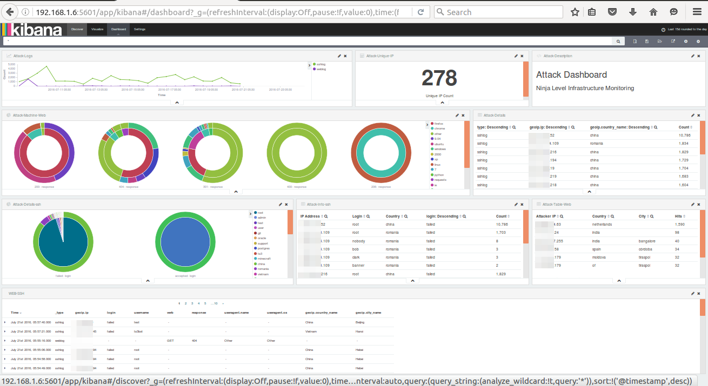

Alerting & Attack patterns dashboard [30 minutes]
Alerting
What is alerting for ELK stack?
We can set up a notification system to let users/admins know that a pattern match has occurred.
How is this achieved?
- Logstash output plugin alerting via (Email, Pager duty, JIRA, etc.)
- Elasticsearch commercial product - Watcher
- An open source alerting for elasticsearch by Yelp called
elastalert - Custom scripts
Creating an alert for DDoS attack on SSH Logs (hands on)
- Create a new log configuration using
sudo vi /etc/logstash/conf.d/ddos.conf
input {
file {
path => '/home/ninja/log-samples/ddos.log'
start_position => "beginning"
ignore_older => 0
}
}
filter {
grok {
add_tag => [ "valid" ]
match => [
"message", "%{SYSLOGTIMESTAMP:syslog_date} %{SYSLOGHOST:syslog_host} %{DATA:syslog_program}(?:\[%{POSINT}\])?: %{WORD:login} password for %{USERNAME:username} from %{IP:ip} %{GREEDYDATA}",
"message", "%{SYSLOGTIMESTAMP:syslog_date} %{SYSLOGHOST:syslog_host} %{DATA:syslog_program}(?:\[%{POSINT}\])?: message repeated 2 times: \[ %{WORD:login} password for %{USERNAME:username} from %{IP:ip} %{GREEDYDATA}",
"message", "%{SYSLOGTIMESTAMP:syslog_date} %{SYSLOGHOST:syslog_host} %{DATA:syslog_program}(?:\[%{POSINT}\])?: %{WORD:login} password for invalid user %{USERNAME:username} from %{IP:ip} %{GREEDYDATA}",
"message", "%{SYSLOGTIMESTAMP:syslog_date} %{SYSLOGHOST:syslog_host} %{DATA:syslog_program}(?:\[%{POSINT}\])?: %{WORD:login} %{WORD:auth_method} for %{USERNAME:username} from %{IP:ip} %{GREEDYDATA}"
]
}
mutate {
remove_tag => [ "valid" ]
lowercase => [ "login" ]
}
date {
match => [ "syslog_date", "MMM d HH:mm:ss", "MMM dd HH:mm:ss", "ISO8601" ]
timezone => "Europe/Helsinki"
}
geoip {
source => "ip"
}
throttle {
before_count => 0
after_count => 5
period => 5
key => "%{ip}"
add_tag => "throttled"
}
}
output {
if "throttled" in [tags] {
email {
subject => "DDoS attack on %{host}"
to => "root"
via => "sendmail"
body => "Alert on %{host} from %{ip} :\n\n%{message}"
#options => { "location" => "/usr/sbin/sendmail" }
}
}
elasticsearch {
hosts => ["localhost:9200"]
index => "DDoS"
}
}
- Load the DDoS config file
sudo /opt/logstash/bin/logstash -f /etc/logstash/conf.d/ddos.conf
- Check the mailbox of
rootuser
sudo -i
mail
Other options
- Elastalert (https://elastalert.readthedocs.io/en/latest/)
Watcheris another commercial product for alerting on top of Elasticsearch
Dashboards for Attack Patterns (hands on)
- Note: We have already imported logs to Elasticsearch using curator
- Now create some advanced dashboards for attack patterns using Kibana
Web Attack Dashboard

SSH Attack Dashboard

Combined Attack Dashboard

Pre-created dashboards
Import the JSON which is already existing in your folder
- Go to the kibana settings
- Select import
- Select the JSON file
/dashboards/all-kibana.json